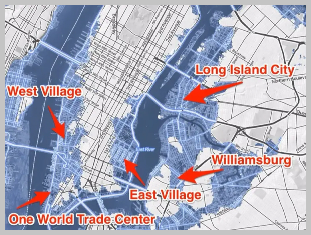

This chart, taken from Climate.gov, shows the recorded sea levels from 1880 to 2020. Due to carbon emission levels continually rising, enough ice from the poles melted to increase the global sea level. It has been on a steady climb, and it is expected to continue rising since we don’t have any implemenations to stop our increased emissions. Having a rising sea level is dangerous because it makes land previously safe from floods, susceptible. In addition, it can leave land that was previously above water, submerged and unusable.

A problem that our future architecture faces is in regards to the height they built and how close it was to the ocean. With ocean levels continuing to rise following a trend, it is expected that by 2200, parts of NYC will be submerged. These areas, following the trend of rising global temperature, will be submerged when the global temperature rises by 2 degrees celsius.